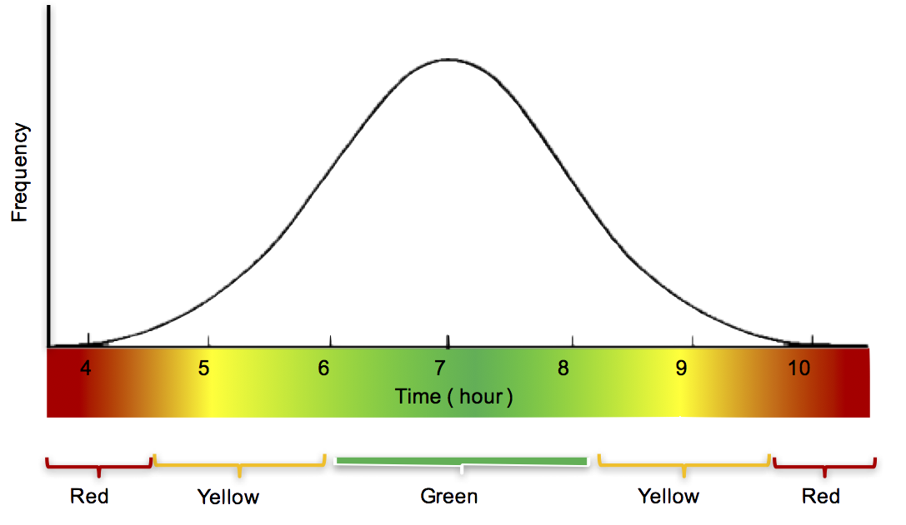

Improve the elderlys' ability to age at home through understanding of daily activities inferred from image analysis.
The need for helping elderly individuals or couples remain in their home is increasing as our global population ages. Cognitive processing offers opportunities to assist the elderly by processing information to identify opportunities for caregivers to offer assistance and support.
Rather than depending on sensors worn on the body (and needing to be not forgotten, recharged, etc..) or installing sensors on individual devices (e.g. sink, cabinet, refrigerator, etc..), this solution utilizes passive monitoring devices, notably video camera(s) with multi-channel microphones, to sense activity, record events, and build a model of normative behavior.
| Initially we intend to monitor the kitchen and recognizes the presence of a person (not an individual) in the room. From this simple event detection we will build a normative baseline of daily activity and detect when that daily activity exhibits aberrations (e.g. no activity in kitchen after +2 std. dev. past median time). The visual recognition algorithm will run on the local device (e.g. RaspberryPi with camera), the issues of round-trip latency to the cloud, or bandwidth required, or security or privacy concerns, will be eliminated. Only events generated from this recognition will be sent to the cloud to build (and update) the normative behavior model. This initial scenario may be easily extended to other passive monitoring capabilities, e.g. audio, motion (sonar), electrical circuit, , ... as well as deployment in other area, e.g. entry way, bathroom, hallway, etc.. to provide support for additional scenarios, e.g. medication adherence, diet, exercise, ... |  |

The primary classifiers can be identified in the following chart:


Classifier relationships to hour of day

Heatmap of classifiers (all times)
These images are created using Watson Analytics. It is simple to get a free account and load the CSV files.
Link to data:


Installation on kitchen shelf


The resin.io service provides a customizable base image with which to "flash" the uSD card for the RaspberryPi. The image may be configured with the SSID and password for the local WiFi network.
The "AgeAtHome" application we have defined provides a context in which devices participate. Each device is assigned to one application. Once a device has been flashed and booted, it connects to the resin.io service and presents itself within the application context.

Each device associated with the application can be inspected, including summary status and logs (e.g. stderr).

Including the ability to ssh(1) into a terminal for command line interface:

Listing of motion detection volume data in file system
 Cognitive Home |
 Dementia Detector |
 Watson Globe |
 Cognitive Companion |
 Health Buddy |
 Recovery Recommender |
 Pratchett |
 Cognitive Caregiving |
 Blue Angel |